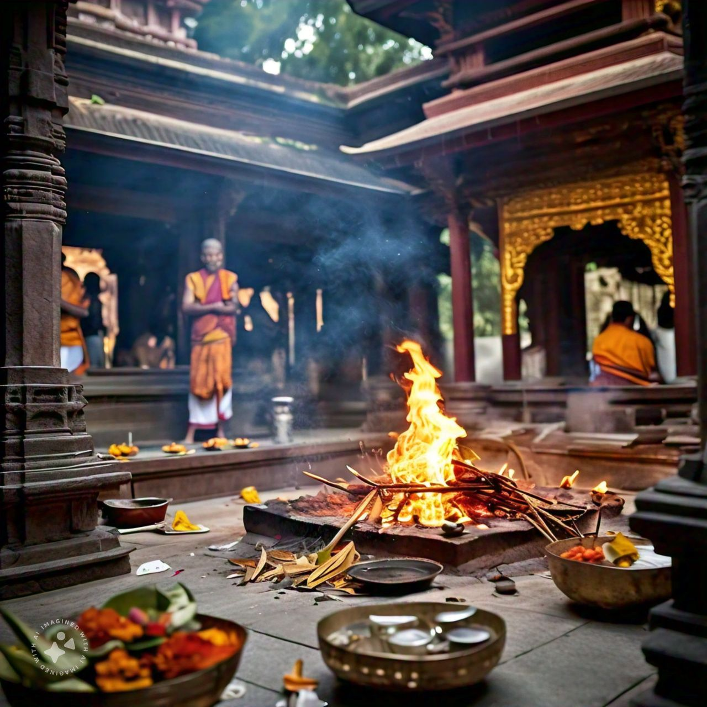

Abhishekam
The sacred bathing of the deity with holy substances like water, milk, and honey. Abhishekam symbolizes purification and devotion, invoking divine blessings.
Archana
A personalized prayer offering, where the devotee's name and wishes are chanted. Flowers, fruits, and other items are presented to the deity, signifying devotion and submission.
Aarti
A lamp lit with ghee or oil is waved in a circular motion before the deity. This ritual represents the dispelling of darkness and the spreading of light, invoking divine blessings and protection.
Homam
An ancient fire ritual where offerings such as ghee, grains, and herbs are offered to the fire, symbolizing transformation and the fulfillment of desires. Homam invokes specific deities for blessings, prosperity, and spiritual progress.
Vastram Seva

Offering new clothes to the deity, symbolizing the devotee’s respect and desire to adorn the god in beautiful garments. Vastram Seva is an expression of love and reverence toward the deity.
Sahasranama Archana
Recitation of the thousand names of the deity in front of the idol while offering flowers at each recitation. This powerful seva brings peace, prosperity, and spiritual upliftment to the devotee.
Special Seva
Conducted on auspicious occasions and festivals, this seva includes a combination of different rituals like Abhishekam, Aarti, and Homam, invoking the highest blessings from the deity for devotees.